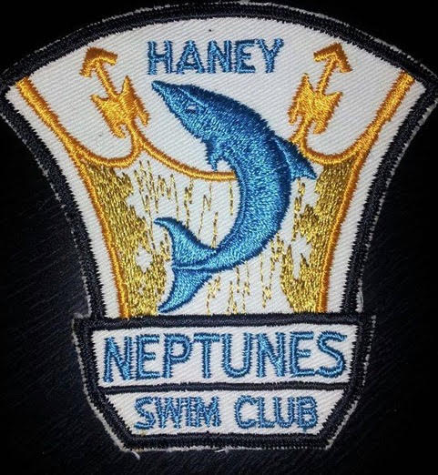
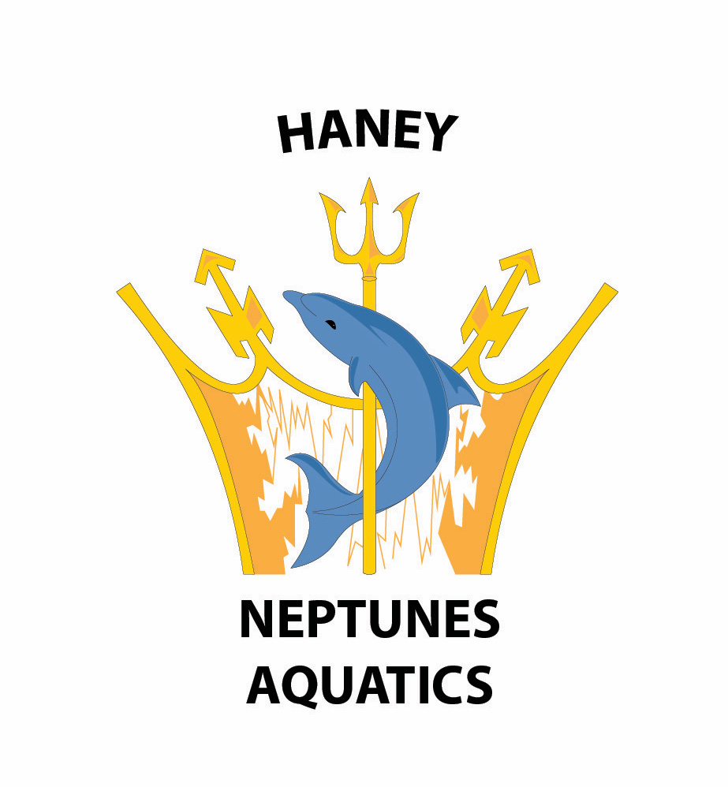

Haney Neptunes Aquatic Club
Overview
The Haney Neptunes Aquatic Club is an all year round swim club apart of the B.C. Summer Swimming Association. The president of the club approached me to redesign and recreate their club logo as part of their celebratory for the 60th anniversary of the club. The original logo design was the clubs logo in the 1970s. The completed design below is finished logo that they still use currently.

